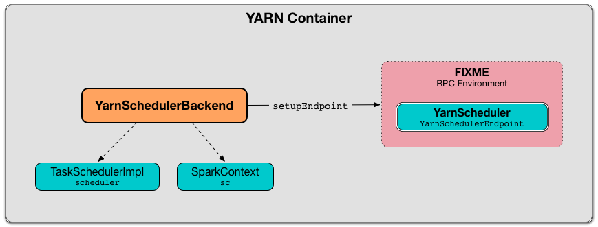

Demo

Figure 1. The Spark Platform

Figure 2. YarnSchedulerBackend
知识点
|
位图压缩算法 Concise Bitmap
Roaring Bitmap
|
| An admonition paragraph draws the reader’s attention to auxiliary information. Its purpose is determined by the label at the beginning of the paragraph. |
Here are the other built-in admonition types:
| Pro tip… |
| Don’t forget… |
| Watch out for… |
| Ensure that… |
| Header 1 | Header 2 | Header 3 |
|---|---|---|
存储 |
|
|
Figure 3. YarnSchedulerBackend
Figure 4. YarnSchedulerBackend
Figure 5. YarnSchedulerBackend
Figure 6. YarnSchedulerBackend